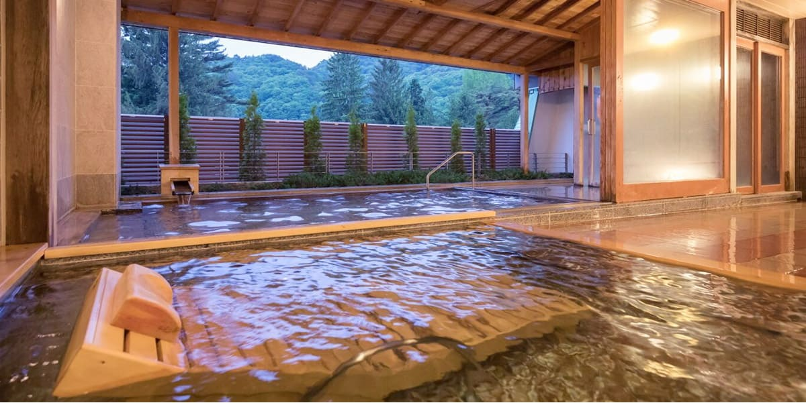
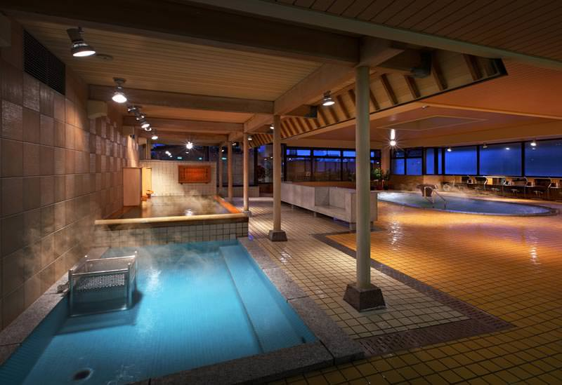

自然溢れる花巻温泉
宮沢賢治のふるさととして知られる花巻にある温泉リゾートで、岩手屈指の規模！
花巻温泉の泉質は体に優しい単純温泉(低張性弱アルカリ性高温泉)です。
無色無臭で、刺激が少ないため、子どもから年配者まで幅広い世代の人が楽しむことができる
病後回復期、疲労回復、健康増進、関節リウマチ、変形性関節症、腰痛症、神経痛
などの症状に良い効果も期待されます！
花巻に行った際は是非行ってみてください。
|

盛岡つなぎ温泉 愛真館
岩手県盛岡市にある温泉です。
趣の異なる18の湯めぐりが魅力の宿でお風呂のはしごを楽しめる風呂自慢の人気の宿
アルカリ性単純硫黄泉。 お肌を柔らかくして古い角質や汚れを落とすと言われています。 しかも美肌成分のメタケイ酸が滑らかな潤いとツヤを与えます。
湯船では香らない場合も多く、硫黄臭が苦手な方でも問題ありません。
盛岡市にあるので是非行ってみてください!!
|